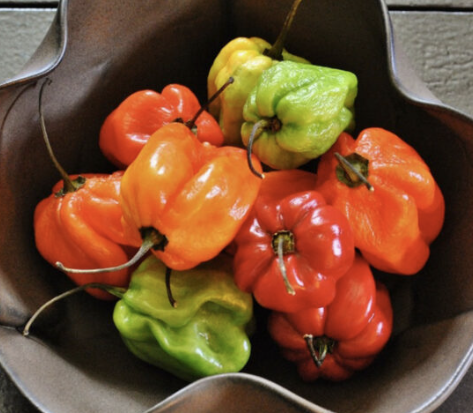

Jamaican Scotch Bonnet

Description
Jamaican Scotch Bonnet plants bear fruits comparable to the Habanero pepper, but with a touch more of sweetness and spiciness. It's a favorite for Caribbean dishes. Its sweet, tropical flavor pairs perfectly well with island tastes. Plants offer big yields all season long. Peppers can be harvested at different stages. 100,000 to 350,000 SHU
Planting Information
Spacing
30-60cm (12-24″) between plants
Location
- Full sun, or at least 6-8 hours of sun per day
- Well-drained soil
Watering
- Water immediately after planting, then regularly throughout the season. Aim for a total of 1-2 inches per week (more when it's hotter).
Notes
- Soil should have abundant phosphorus and calcium, so add lime and compost to the bed at least three weeks prior to transplanting
- Mix ½ cup of balanced organic fertilizer beneath each plant.
- Replenish throughout the season
- Spread mulch (such as chopped leaves or straw) around the plants to help keep the soil cool and moist.
- Peppers will tolerate dry soil, they will only put on good growth if kept moist.
- Harden off seedlings before planting
- Pinch back growing tips to encourage leaf production
- Support each pepper plant with a stake or small tomato cage, to help bear the weight of the fruit once it begins to produce.
Companion planting
Friends
- alliums
- asparagus
- basil
- carrots
- cucumbers
- eggplant
- endive
- marjoram
- Marigold
- Nasturtium
- oregano
- parsley
- rosemary
- spinach
- squash
- Swiss chard
- tomatoes
Foes
- beans
- broccoli
- Brussels sprouts
- cabbage
- cauliflower
- fennel
- kale
- radishes
- turnips